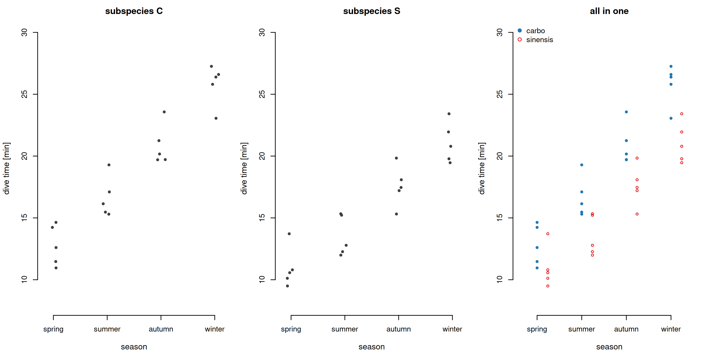
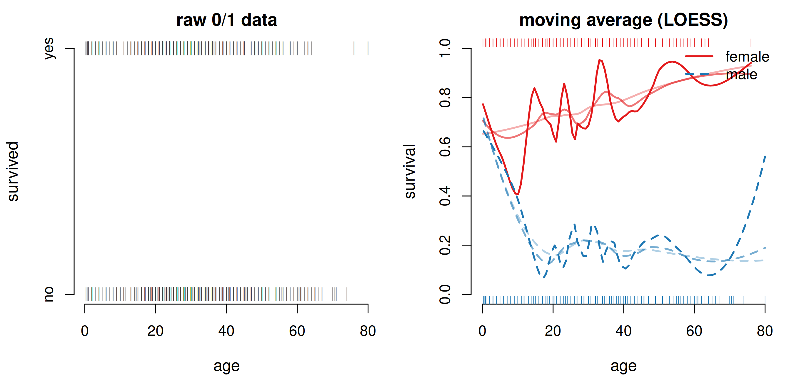
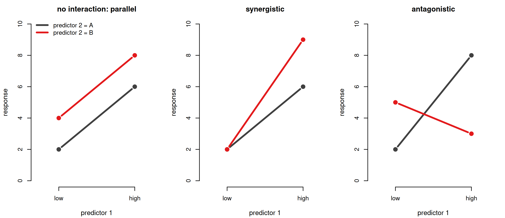
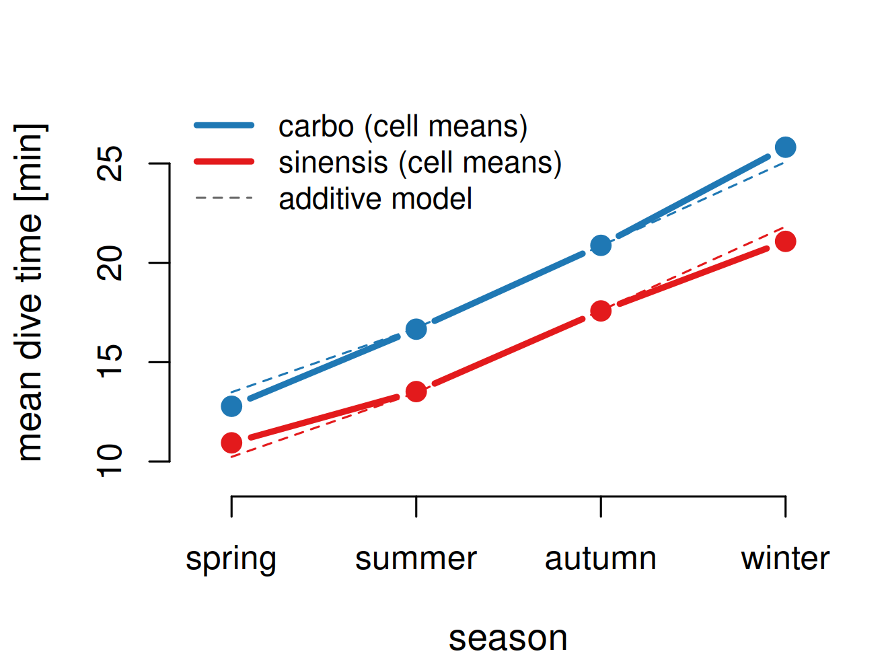
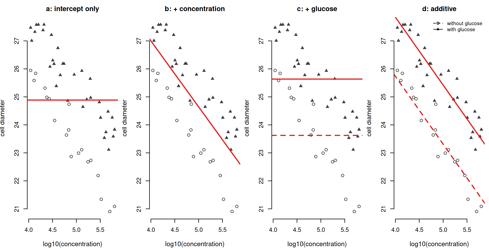
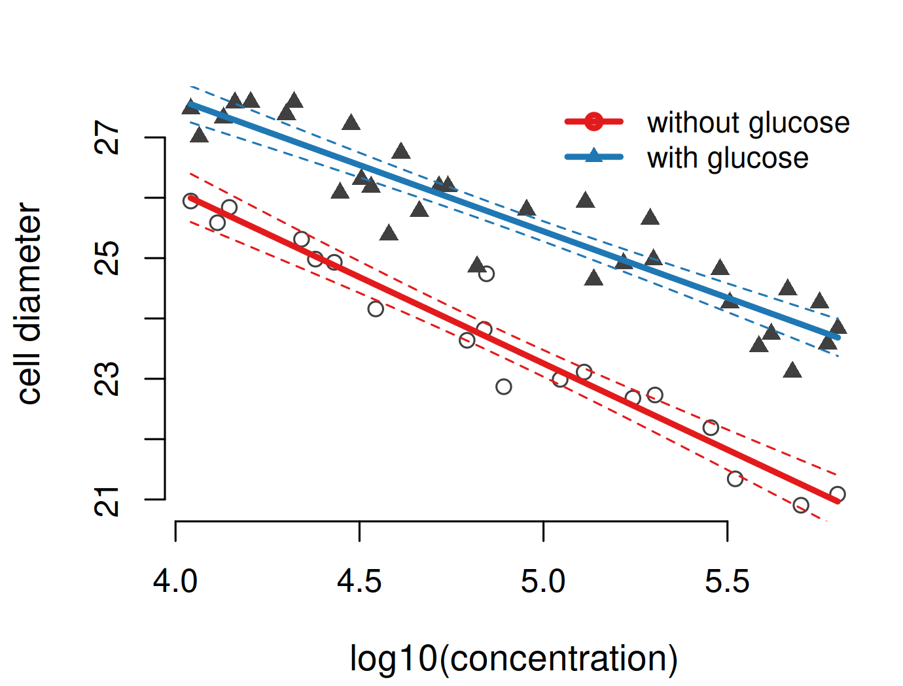
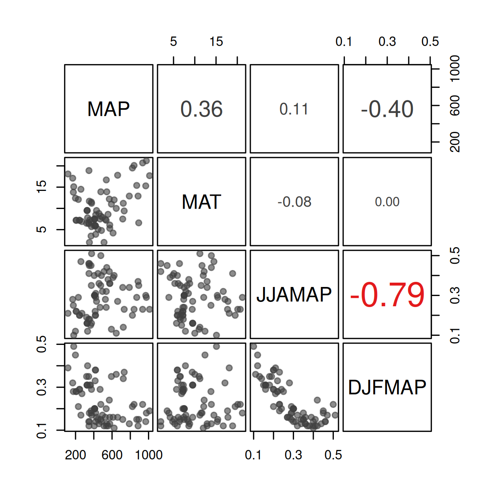
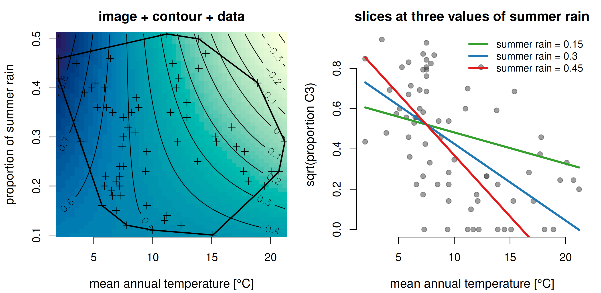
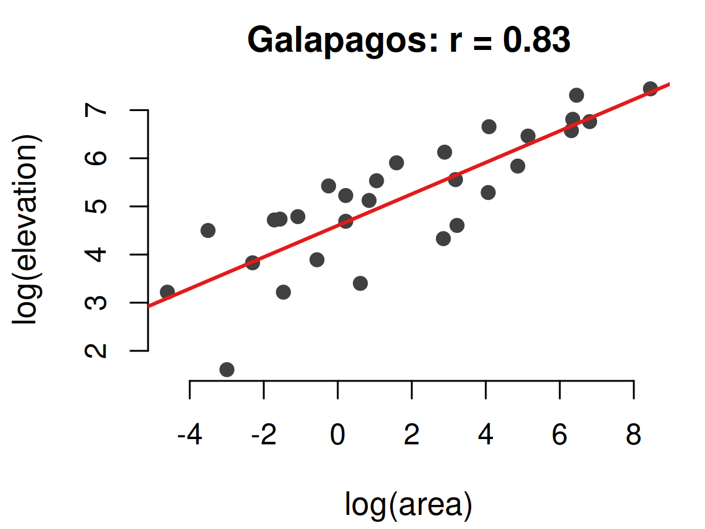
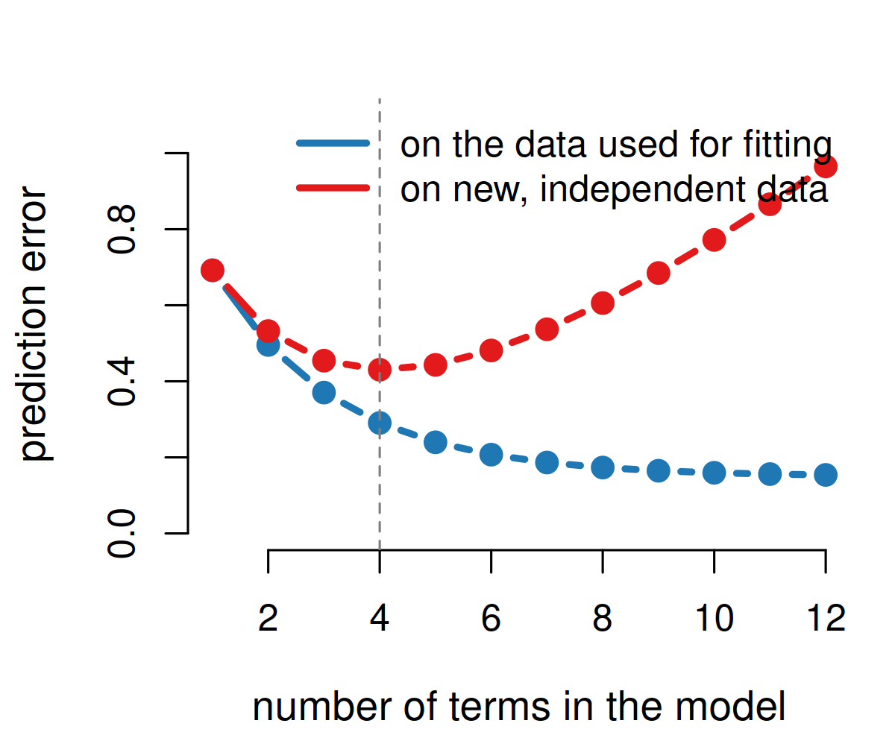

| Estimate | Std. Error | z value | Pr(>|z|) | |
|---|---|---|---|---|
| (Intercept) | 1.2354 | 0.1920 | 6.43 | 0.000000 |
| age | -0.0043 | 0.0052 | -0.82 | 0.413925 |
| sexmale | -2.4607 | 0.1523 | -16.16 | 0.000000 |
Dormann (2020), Environmental Data Analysis — Chapters 15 and 16
2026-09-23
Every model so far had one predictor. Adding a second one is, in principle, just one more row in the coefficient table — but four things get complicated. At the end of this chapter you should…
Note
Skipped from Dormann: principal component analysis (15.3.1, 16.2.1), the two-way ANOVA by hand (15.4.1) and the matrix algebra (15.5). Practical 5 is a reading practical: you interpret output, you do not write code.
| Estimate | Std. Error | z value | Pr(>|z|) | |
|---|---|---|---|---|
| (Intercept) | 1.2354 | 0.1920 | 6.43 | 0.000000 |
| age | -0.0043 | 0.0052 | -0.82 | 0.413925 |
| sexmale | -2.4607 | 0.1523 | -16.16 | 0.000000 |
Survival of 1046 Titanic passengers, survived ~ age + sex. Each predictor gets its own maximum-likelihood estimate; a 42-year-old man survives with probability \(\mathrm{logit}^{-1}(1.235 - 0.00425 \cdot 42 - 2.46) = 0.20\). Nothing new — except that four complications now arise:
Tip
“Multiple” regression = several predictors, one response. (Multivariate statistics means several responses — a different topic.)

Dive times of two European cormorant subspecies, P. carbo carbo (C) and P. c. sinensis (S), in four seasons (Dormann Figs 15.1, 15.2). Panel plots (left, middle) give a quick overview; an all-in-one plot (right) needs more work but takes less space. Either way we see the same thing: dive time increases over the year in both subspecies, and the smaller sinensis dives a little shorter. A continuous x works the same way — one panel, or one symbol, per level of the factor.

Titanic survival against age (Dormann Figs 15.3–15.5). A panel or scatter plot of 0/1 data shows nothing (left). A moving average (LOESS: a local regression in a sliding window, span 0.2 / 0.5 / 0.75 from dark to light) makes the pattern visible: women survived at a high rate at every age, men’s survival dropped steeply with age. The window width is a choice — narrow traces the data, wide smooths it. Note the two curves are not parallel: that is an interaction.

What does a plant need to grow? Water and light. More light helps — but only if there is enough water. That is a statistical interaction: the effect of one predictor depends on the value of the other (Dormann Fig. 15.6). In a figure you recognise it as lines with different slopes; parallel lines mean purely additive effects. Tropical trees grow because heat and rain come in the right combination; on the Titanic the effect of age depends on sex.
| passenger | sex | age | sex × age |
|---|---|---|---|
| Miss Allen | female (0) | 29.0 | 0 |
| Master Allison | male (1) | 0.9 | 0.9 |
| Mrs Allison | female (0) | 25.0 | 0 |
| Mr Anderson | male (1) | 48.0 | 48.0 |
The factor is a dummy (0/1). Multiplying it with age gives a new variable that is zero for all women — an effect of age that applies to men only. R does this for you: age * sex means age + sex + age:sex.
| Estimate | Std. Error | z value | Pr(>|z|) | |
|---|---|---|---|---|
| (Intercept) | 0.4934 | 0.2542 | 1.94 | 0.052257 |
| age | 0.0225 | 0.0085 | 2.64 | 0.008342 |
| sexmale | -1.1541 | 0.3393 | -3.40 | 0.000671 |
| age:sexmale | -0.0463 | 0.0112 | -4.13 | 0.000037 |
42-year-old man: \(\mathrm{logit}^{-1}(0.49 + 0.0225\cdot42 - 1.15 - 0.046\cdot42) = 0.11\); 42-year-old woman: the last two terms are × 0 → 0.73.
Two continuous predictors: the product is taken directly; positive = synergistic, negative = antagonistic (standardise first, or the larger one dominates). Beware: an unmodelled quadratic effect can masquerade as a significant interaction — test polynomials as well (Dormann footnote 4).
| Df | Deviance | Resid. Df | Resid. Dev | Pr(>Chi) | |
|---|---|---|---|---|---|
| NULL | NA | NA | 1045 | 1414.6 | NA |
| age | 1 | 3.2 | 1044 | 1411.4 | 0.071959 |
| sex | 1 | 310.0 | 1043 | 1101.3 | 0.000000 |
| age:sex | 1 | 17.9 | 1042 | 1083.4 | 0.000023 |
anova(fm) adds the terms one after the other (“sequentially”): each row tests what a term adds on top of the rows above it. Age alone explains almost nothing (P = 0.41); sex explains a lot; the interaction explains 17.9 more units — highly significant.
Important
Do not conclude “age does not matter”. The significant interaction says that the main effects alone do not describe the pattern: the sexes differ strongly, but not among young children. Once an interaction is in the model, its main effects must stay — even if not significant — because the interaction contains them (Nelder’s marginality principle). And do not rank importance by the deviance column: with correlated predictors the order of the terms changes the numbers (but never the residual deviance).
| Estimate | Std. Error | |
|---|---|---|
| (Intercept) | 13.49 | 0.58 |
| seasonsummer | 3.23 | 0.74 |
| seasonautumn | 7.37 | 0.74 |
| seasonwinter | 11.59 | 0.74 |
| subspeciesS | -3.26 | 0.52 |
| Df | Deviance | F | Pr(>F) | |
|---|---|---|---|---|
| season | 3 | 759.8 | 95.3 | 0.000 |
| subspecies | 1 | 106.0 | 39.9 | 0.000 |
| season:subspecies | 3 | 10.6 | 1.3 | 0.284 |

Left: coefficients of the additive model and anova(divetime ~ season * subspecies). The intercept is the reference cell (spring, C: 13.5 min); the season coefficients are differences from spring, subspeciesS the difference S − C (−3.3 min). A fitted value is a sum of coefficients: sinensis in autumn = 13.5 + 7.4 − 3.3 = 17.6 (or predict()). The interaction (3 df) is not significant (F = 1.4, P = 0.27): near-parallel lines, so we report the additive model. \(R^2\) = 90%: season 79%, subspecies 11% (partial \(R^2\) from the deviance column).

Diameter of Tetrahymena cells against culture density, with and without added glucose (Dormann Fig. 16.4; data after Dalgaard 2002). A model with a continuous and a categorical predictor is traditionally called ANCOVA — “analysis of covariance” — only for nostalgic reasons: it is just a GLM. (a) one mean; (b) one regression line; (c) two means; (d) the additive model diameter ~ log10(conc) + glucose: two parallel lines — the factor shifts the intercept, the slope is shared.

| Estimate | Std. Error | t value | Pr(>|t|) | |
|---|---|---|---|---|
| (Intercept) | 37.559 | 0.988 | 38.03 | 0.0000 |
| lconc | -2.861 | 0.202 | -14.19 | 0.0000 |
| glucoseYes | -1.122 | 1.219 | -0.92 | 0.3618 |
| lconc:glucoseYes | 0.662 | 0.248 | 2.67 | 0.0104 |
Read the two lines straight from the table:
The interaction is significant (P = 0.01): the slopes differ. The glucose main effect (P = 0.36) is the intercept difference at log10(conc) = 0 — far outside the data, and it must stay in the model anyway.
Dormann Figs 16.3 / 16.5: lines only over the data range, 95% bands via predict(..., interval = "confidence") and matlines(). “Glucose does have an effect, but it is only detectable if we take the cell concentration into account.”

Proportion of C3 grasses (√-transformed) at 73 sites (Paruelo & Lauenroth 1996) against mean annual precipitation (MAP), temperature (MAT) and the fraction of summer (JJAMAP) and winter rain (DJFMAP).
Step 0: check the predictors. Summer and winter rain are strongly negatively correlated (r = −0.79 > 0.7): keep only one — JJAMAP, because growth happens in summer.
Step 1: the full model sqC3 ~ MAP * MAT * JJAMAP — 3 main effects, 3 two-way and 1 three-way interaction.
| Df | Sum Sq | F value | Pr(>F) | |
|---|---|---|---|---|
| MAP | 1 | 0.000 | 0.00 | 0.9859 |
| MAT | 1 | 1.962 | 35.78 | 0.0000 |
| JJAMAP | 1 | 0.100 | 1.83 | 0.1808 |
| MAP:MAT | 1 | 0.030 | 0.54 | 0.4647 |
| MAP:JJAMAP | 1 | 0.016 | 0.29 | 0.5928 |
| MAT:JJAMAP | 1 | 0.282 | 5.14 | 0.0267 |
| MAP:MAT:JJAMAP | 1 | 0.000 | 0.00 | 0.9554 |
Only MAT:JJAMAP is significant, so the reduced model keeps MAP + MAT * JJAMAP (\(R^2_{adj}\) = 0.36 — “not too shabby for ecological data”). JJAMAP and MAT are not significant on their own but are part of the interaction, so they stay. Only MAP can be interpreted directly: more rain, more C3 grasses.

Dormann Figs 16.7–16.9. Two predictors plus a response need a surface: outer() evaluates predict() on a grid, image() colours it, contour() labels it — here at the mean MAP. The effect of temperature is steepest where summer rain is high: a continuous change of slope, the interaction. Always add the data points and their convex hull: the empty corners (hot and summer-wet) contain no observations, and predictions there have no basis. With every extra dimension this “curse of dimensionality” gets worse. Slices (right) are the poor man’s effect plot.

| lArea | SE | lElev | SE | |
|---|---|---|---|---|
| Species ~ lArea | 0.367 | 0.036 | ||
| Species ~ lElev | 0.761 | 0.127 | ||
| Species ~ lArea + lElev | 0.389 | 0.065 | -0.065 | 0.165 |
VIF of the two-predictor model: 3.3 — the variance of each coefficient is 3.3 × what it would be with uncorrelated predictors (SE of lArea: 0.036 → 0.065).
Bigger islands are higher. Alone, each predictor is “highly significant”; put both in and elevation drops to zero with a doubled standard error. Two problems (Dormann 15.3): we cannot attribute the effect to one of them (interpretation), and the likelihood surface becomes a flat ridge, so estimates are unstable and their errors inflated (estimation).
Tip
Diagnose before modelling: cor() / pairs() — |r| < 0.7 is safe. After modelling: car::vif() — values above 10 (Appalachian soils: 65,655!) mean a predictor has to go. The remedy in this course: keep one representative of each correlated group (Dormann’s PCA and cluster analysis are the alternatives).
The full model contains every predictor you consider reasonable, with interactions (and polynomials). Rule of thumb: 5–10 data points per model term (Harrell) — 100 observations allow ~10 terms; for 0/1 data count the rarer outcome.
With 14 terms there are \(2^{14}\) = 16 384 sub-models. Three strategies:
step())MuMIn::dredge())
Why not always keep the full model? It fits these data best and its estimates are unbiased — but it traces the data set. The variance–bias trade-off (schematic): with more terms the fit to the training data always improves, the error on new data first drops and then rises. Information criteria — AIC, BIC — balance fit (log-likelihood) against complexity (number of parameters) to find that minimum; BIC penalises harder and prefers smaller models. And every stepwise removal is a test, so selection distorts the p-values that survive.
| model | df | log-likelihood | AIC | BIC | LR test: deviance | P (chi-sq) |
|---|---|---|---|---|---|---|
| 1: survived ~ age + sex | 3 | -550.7 | 1107.3 | 1122.2 | NA | NA |
| 2: survived ~ age * sex | 4 | -541.7 | 1091.4 | 1111.2 | 17.9 | 2.32e-05 |
Dormann’s Table 15.1: two ways to compare the additive and the interaction model of Titanic survival.
anova(m1, m2, test = "Chisq")): only for nested models; the deviance difference is \(\chi^2\) with df = difference in parameters. Here 17.9 on 1 df, P < 0.0001.test = "F".Note
The criteria do not always agree — on the Titanic test data the simpler model even had the better \(R^2\). Which criterion, you decide beforehand; AIC (or BIC) is currently the standard.
step(): reading the outputStart: AIC=999.41
surv ~ sex * age * passengerClass
Df Deviance AIC
- sex:age:passengerClass 2 917.84 987.37
<none> 915.98 999.41The full Titanic model sex * age * passengerClass (8 terms), first step of a BIC selection (k = log(n)). At every step step() tries to remove each removable term — only the three-way interaction here, because every other term is part of it (marginality!) — and lists the candidates by the criterion. <none> is the current model; anything above <none> improves the model when dropped, so the top term goes and the procedure repeats until <none> is on top.
| criterion | final model | terms | AIC | BIC |
|---|---|---|---|---|
| full model | sex * age * passengerClass | 8 | 940.0 | 999.4 |
| backward by AIC | sex + age + passengerClass + sex:age + sex:passengerClass + age:passengerClass | 6 | 937.8 | 987.4 |
| backward by BIC | sex + age + passengerClass + sex:passengerClass | 4 | 946.0 | 980.7 |
AIC keeps all two-way interactions; BIC ends with sex:passengerClass only. Dormann’s warning: stepwise selection looks one step ahead — a removal that only pays off together with a second one is never found, so an AIC-driven step() can stop at a model with a worse AIC than a BIC-selected one. Not a panacea (Austin & Tu 2004); it gets more reliable with more data per term.
| lArea | lElev | lNear | lAdj | df | AIC | delta | weight |
|---|---|---|---|---|---|---|---|
| 0.376 | -0.123 | 4 | 273.4 | 0.00 | 0.28 | ||
| 0.367 | 3 | 274.0 | 0.61 | 0.21 | |||
| 0.375 | -0.130 | -0.030 | 5 | 274.7 | 1.29 | 0.15 | |
| 0.371 | 0.017 | -0.125 | 5 | 275.4 | 1.99 | 0.10 |
MuMIn::dredge() fits all \(2^4\) = 16 negative-binomial models of Galapagos plant richness (na.action = na.fail makes every model use the same rows). Shown: the models within 2 AIC units of the best.
lArea is in every competitive model, lNear in most, lElev and lAdj only occasionally and with coefficients near 0 (lElev is collinear with area)Important
Dredging is criticised as “fishing”: afterwards we act as if we had planned this one model, so its p-values and confidence intervals are wrong (point predictions are fine). Whatever you do — say what you did.
No code to write — you read and interpret output, as you would in a paper:
birdmalariaO): reconstruct the four group means from the coefficients of Sex * mmal; read a sequential ANOVA table; additive or interaction model?regrowth): why the boxplot and the coefficient disagree about grazing; two parallel lines from one table; why the order of terms changes the deviancewells, quasi-binomial): two logit equations; non-significant main effects that must stay; F instead of χ²RIKZdat): slopes per exposure class, LR test with 2 df, AIC ranking of four models, back-transforming with exp()gala): |r| > 0.7, VIF, what happens to elevation once area is in the modelloyn): slopes at grazing 1 and 5, image/contour plot and the empty cornersloyn): a step() table, AIC vs BIC results, a dredge() table with delta and weight — and the caveat about the p-valuesouter → image + contour) with the data points on it.anova() of one model is sequential — order matters when predictors are correlated; anova(m1, m2) compares two nested models.step(), BIC for small n) or search all subsets (dredge(), weights); never forward. Selected models have optimistic p-values — say so.Tip
Dormann, C. F. (2020). Environmental Data Analysis: An Introduction with Examples in R, Chapters 15 and 16. Springer. Data: carData::TitanicSurvival, ISwR::hellung, Paruelo & Lauenroth (1996) via Quinn & Keough (2002), qsbsdata::gala.